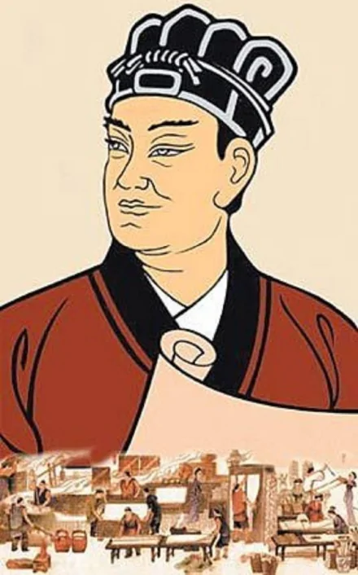

联系我们:100010（工作时间：24h） 在线客服（24h无人接待）
自创备案号：1234-56789 Chrome商店下载版权与免责声明版权申诉出版物许可证
| 主页 | 造纸术 | 印刷术 | 火药 | 指南针 |
|
造纸术 |
造纸术，是中国四大发明之一，发明于西汉时期、改进于东汉时期。中国是世界上最早养蚕织丝的国家，中国古代劳动人民以上等蚕茧抽丝织绸，剩下的恶茧、病茧等则用漂絮法制取丝绵。漂絮完毕，篾席上会遗留一些残絮。当漂絮的次数多了，篾席上的残絮便积成一层纤维薄片，经晾干之后剥离下来，可用于书写。这种漂絮的副产物数量不多，在古书上称它为赫蹏或方絮。发展与历史 
造纸术，是 中国四大发明 之一，发明于西汉时期、改进于东汉时期。中国是世界上最早养蚕织丝的国家，中国古代劳动人民以上等 蚕茧 抽丝织绸，剩下的恶茧、病茧等则用漂絮法制取 丝绵 。 漂絮 完毕，篾席上会遗留一些残絮。当漂絮的次数多了， 篾席 上的残絮便积成一层纤维薄片，经晾干之后剥离下来，可用于书写。这种漂絮的副产物数量不多，在古书上称它为 赫蹏 或 方絮 。
造纸方法 
新的造纸术的方法是用树皮、麻绳头、破布、旧渔网等作原料，光把它们捣碎，再放在水中浸成纸浆，最后把纸浆放在旧竹帘子上，摊成薄片，漏掉水分，等干燥后，留在细帘子上一层薄片纤维，便是纸张了。这种纸在当时很受人们的欢迎，因为它既轻又便宜，携带方便。
|
联系我们:100010（工作时间：24h） 在线客服（24h无人接待）
自创备案号：1234-56789 Chrome商店下载版权与免责声明版权申诉出版物许可证